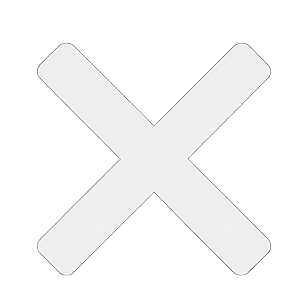
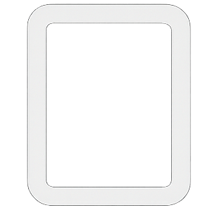
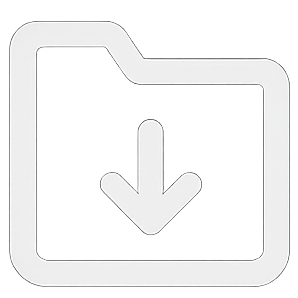

Ctrl+V 粘贴图片
双击在新窗口编辑
双击在新窗口编辑
1+1= 显示灰色结果。x^-2 后按 空格 → x⁻²。pi→π，*→×，sqrt→√。💾 存为文件夹： 推荐使用！系统会自动创建一个带时间戳的文件夹（如 20251010_作业A），将你的文字草稿(txt)和所有图片素材(png)完整打包保存。
📂 打开文件夹： 选择之前的项目文件夹，即可一键恢复当时的所有计算过程和图片标记。
| 分类 | 语法示例 | 说明 |
|---|---|---|
| 基础代数 | 5! / sqrt(9) / abs(-5) |
阶乘、根号、绝对值 |
| 三角函数 | sin(30 deg) / cos(pi) |
务必区分 deg(度) 和 rad(弧度) |
| 排列组合 | combinations(5, 2) |
从 5 个中取 2 个的组合数 (C₅²) |
| 求和/统计 | sum(1, 2, 3) / mean(1, 2, 3) |
求和、求平均值 |
| 复杂求和 | sigma(x^2, x, 1, 5) |
计算 $\sum_{i=1}^{5} x^2$ (表达式, 变量, 起始, 结束) |
| 微积分 | d(x^2, x) / int(x^2, x, 0, 1) |
求导数 (Derivative) / 定积分 (Integral) |
| 线性代数 | det([1, 2; 3, 4]) |
计算行列式 (矩阵用 ; 分行) |
| 矩阵运算 | [1, 2] * [3, 4]' |
矩阵乘法 (' 表示转置) |
在顶部 Tab 标签页中管理分组：
• 点击 Tab 切换分组
• 双击 Tab 名称修改
• 点击 × 删除分组
• 点击 + 添加新分组